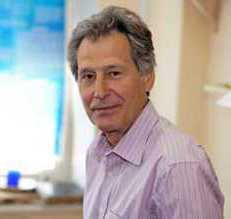

People  Sergei P. Belov Sergei P. Belov
Sergei Pavlovich Belov
E-mail: belov@appl.sci-nnov.ru
Tel: +7 (831) 416-49-66
|  |
Sergey P. Belov, born on October 12, 1946, in Gorky region.
Graduated from the Gorky State University in 1970. His master degree thesis “Radiospectroscope with the acoustical detector” (RAD-spectrometer) was a breakthrough in the mm and sub-mm molecular spectroscopy. From 1970 to 1977 he worked in the spectroscopy group of Prof. Andrei F. Krupnov at the Radio-Physical Institute (NIRFI) and since 1977 to the present time has been with the Institute of Applied Physics of RAS, Nizhny Novgorod. Current position - senior research associate. Major interests - experimental study of high resolution rotational and rotational-vibration spectra of the molecules and molecular clusters in mm and sub-mm wave range (30 GHz - 1.25 THz); design and development of broadband high resolution spectrometers with the free running, frequency locked (RAD-3 spectrometer), frequency and phase stabilized backward wave oscillators (BWOs).
|
He developed and put into operation several spectrometers for different applications during the periods he worked at the NIRFI and IAP, Nizhny Novgorod; at the First Physical Institute (Prof. Gisbert Winnewisser), Cologne, Germany; at the Physics and Chemistry Departments (Prof. Frank C. DeLucia), the Ohio-State University, Culumbus OH, USA; at the Chemistry Department (Prof. John W. Bevan), the Texas A&M University, College Station TX, USA. For a long time he has collaborated with Prof. Dushan Papousek and Prof. Stepan Urban at the J. Heyrovsky Institute of Physical Chemistry and Electrochemistry of Czechoslovak Academy of Science, Prague, Czechoslovak Republic; worked as a guest researcher at the National Institute of Standards and Technology, Gaithersburg MD, USA, with Dr. Jon T. Hougen and Dr. Richard Suenram; was a JSPS Fellow at the Institute for Molecular Science (Prof. Keichi Tanaka), Myodaiji, Okazaki, Japan.
Highlights of research: high sensitive acoustical cell for the RAD spectrometer; first broadband high resolution automatic records of molecular rotational spectra with a free running BWO and SO2 reference spectrum; inversion spectrum of the ammonia molecule NH3 in ν2 = 1 vibrational state; ΔK = ±3 “forbidden” transitions of the PH3 and NH3 molecules; pressure induced line frequency shifts; sub-Doppler resolution spectra and precise frequency measurements with Lamb-dip technique, THz methanol CH3OH spectrum, fast scan submillimeter spectroscopy technique (FASSST spectrometer), acetaldehyde CH3COH sub-mm spectra in torsional states up to Vt = 4; fast scan submillimeter spectrometer with the coaxial pulsed jet; small hydrogen-bonded molecular clusters; polar gas detection at ppt (1 part in 1012 ) sensitivity.
Awards: 1975 - Prize of scientific exhibition "250 years of the Russian Academy of Science", Moscow, for The design and development of the high sensitive broad band sub-millimeter wave spectroscopy; 1982 - Joint prize of the USSR and CSSR Academies of Sciences for Investigation of Fine Structure of Rotational-Vibrational Spectra of Nonrigid Molecules.
Invited lectures at: The VI International Conference on High Resolution Molecular Spectroscopy, Prague 1980; X International Colloquium on High Resolution Molecular Spectroscopy, Dijon 1987, France; NATO Advanced Research Workshop Spectroscopy from Space, Bratislava 2000, Slovakia; XVI Symposium on High Resolution Spectroscopy (HighRus -2009), Baykal Lake, Russia; II International Symposium Topical Problems of Biophotonics, 2009, Nizhny Novgorod, Russia.
In March 2013 in accordance with the ISI Web of Knowlegde he has over 90 papers published in international peer-reviewed journals and cited more than 1500 times. His Hirsch index is 23.
Selected papers
|